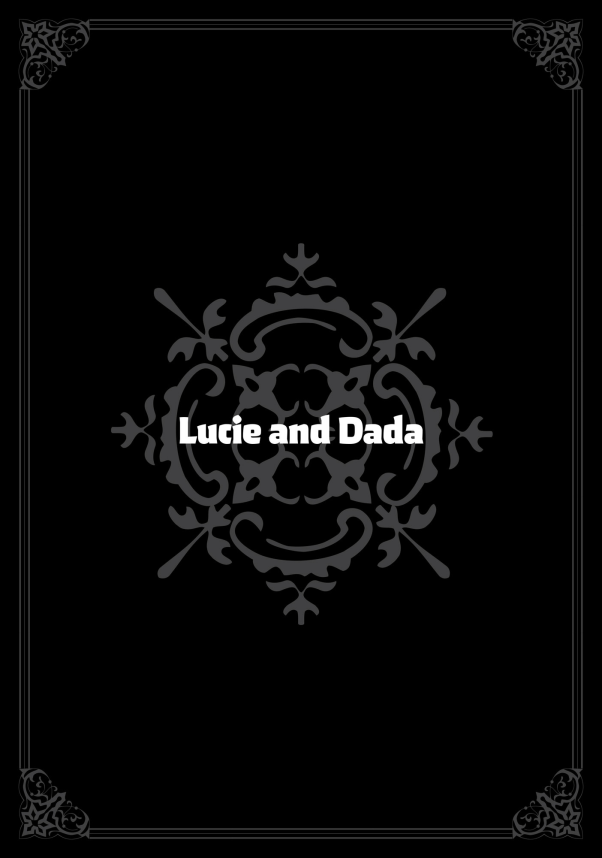
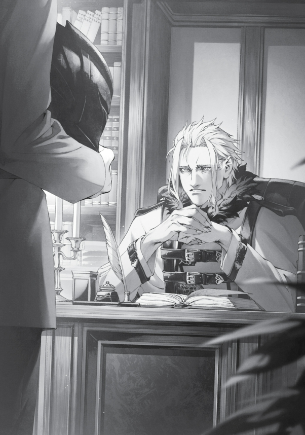

GÜNLER HIZLA AKIP GİTTİ. Eris ve Roxy, çocuklarını sorunsuz bir şekilde dünyaya getirdi—ikisi de kızdı. Roxy’nin kızına Lily, Eris’in kızına ise Christina adını verdik. Artık dört kızım ve iki oğlum vardı. Ev gittikçe daralmaya başlamıştı; belki bir ek yapmayı düşünmenin zamanı gelmişti… ve biraz da aile planlaması yapmayı. Bunun üzerine, Lucie yedi yaşına basmıştı ve ilkokula başlayacak yaşa gelmişti. İlkokul, aynı yaştaki çocukların bir araya gelip temel bilgileri öğrendiği bir yerdi. Açıkçası, temel bilgileri ebeveynler de öğretebilirdi. Ama okulun asıl amacı sosyalleşmekti. İnsan, diğer insanlara ihtiyaç duyar. Bazıları tek başına ayakta duracak güce sahip olabilir, ama bunlar istisnalardır. Okul, arkadaş edinmeyi, başkalarıyla ilişki kurmayı ve kavgaları düzgün bir şekilde çözmeyi öğrenme yeridir. Burada, Ranoa Krallığı’nda ilkokul diye bir şey yoktu, ki bu şaşırtıcı değildi; zorunlu eğitim diye bir kavram yoktu sonuçta. Bana sorarsanız, çocuklar okula gitmeli. Önceki hayatımda bir okuldan atılmış olabilirim, ama bu hayatımda okul bana her şeyi verdi. Zanoba’yla dost oldum, Cliff, Badigadi, Nanahoshi ve Ariel ile tanıştım… ve Sylphie ile evlendim. Şüphesiz, Ranoa Büyü Üniversitesi’nde geçirdiğim zaman, şu an sahip olduğum zengin sosyal hayatı kurmamı sağladı. Aynı fırsatların tüm çocuklara sunulmasını istiyordum. Geçen yıl aile toplantısında bunu duyurduğumda, çoğunluk beni destekledi. Sylphie, Roxy ve Lilia benim tarafımdaydı. Eris, “Aslında okula gitmelerine gerek yok,” dese de, güçlü bir karşı çıkış sergilemedi. Böylece, çocuklarımızın yedi yaşından itibaren Ranoa Büyü Üniversitesi’ne gideceklerine karar verdik. Yaşça daha büyük sınıf arkadaşları olmalarının bile bir avantaj olacağını düşündüm. Bugün, Lucie’nin okulunun ilk günüydü. Önünde uzun yedi yıl vardı—tabi eğer bir sınıfta kalmazsa, yoksa daha fazla bile olabilirdi. Bugün ise o uzun yolculuğun ilk günüydü.
“Lucie, her şeyin yanında mı?”
“Her şeyim tamam!” Lucie, girişte duruyordu. Üzerinde biraz bol gelen okul üniforması ve sırtına büyük gelen çantası vardı. Çantasının içinde, yeni başlayanlar için bir asa, bir büyücü cüppesi, büyü ders kitapları ve öğle yemeği kutusu bulunuyordu. Her şey yepyeniydi. Lucie, tam boy aynada kendini inceledi ve yeni kıyafetiyle belli ki çok memnundu. Yüzünde kendinden emin bir gülümseme vardı. Belki de bu yüzden bu kadar rahat bir şekilde konuşuyordu. Önceki gece her şeyi defalarca kontrol etmiştik ve zaten yanına alması gereken pek bir şey yoktu. Tamamdı herhalde. Ama bir kez daha kontrol etmekten zarar gelmezdi.
“Mendilin yanında mı?”
“Cebimde!”
“Kalem kutun yanında mı?”
“Çantamda!”
“Ya öğle yemeğin?”
“Çantamda!”
“Peki, babaya bir veda öpücüğü?”
“Asla!” Asla mı?! Hmm, başka ne vardı? İnsanların unutmaya meyilli olduğu şeyler… Gelecek hayalleri, umut, gerçek… “Rudy, hazır olduğunu söyledi.” Sylphie, düşüncelerimi bölerek sırtıma dokundu. “Büyüyor, endişelenme, her şey yolunda olacak.” Büyüyor… Ah, hayır. Zaten yedi yaşında! Yedi yaşına gelmişti, artık kocaman bir çocuk olmuştu—bak ne kadar yetenekli görünüyordu! Kocaman bir çocuk artık.
“Baba, iyiyim! Elimden gelenin en iyisini yapacağım!” dedi Lucie, küçük yumruğunu sıkarken. Bu hareket hem cesur, hem tatlıydı… hem de beni inanılmaz derecede endişelendiriyordu. Eğer kötü niyetli biri olsaydım ve böyle sevimli bir çocuğu görseydim, hemen kaçırmak isterdim. Lucie büyümüş olabilirdi, ama hâlâ küçücüktü.
“Lucie, tanımadığın hiç kimseyle bir yere gitmemelisin, tamam mı?”
“Tamam!”
“Eğer biri seni zorla götürmeye çalışırsa, adını bağırarak söyle, anladın mı?”
“Tamam!”
“Ağzını kapatıp bağırırsan seni öldüreceğini söylerlerse, Dada’nın sana verdiği mektubu göster ve okumalarını sağla, anladın mı?”
“Tamam!” Bu arada, mektubun içinde herhangi bir kaçıran kişiye yönelik mesajım vardı. Hizmet ettiğim kişinin doğasını, bağlantıda olduğum insan türlerini ve Lucie’ye zarar gelirse neler olacağını açıklıyordu. Kaçıran kişinin okuma yazma bilmemesi ihtimaline karşı, köle tüccarlarıyla önceden görüşüp, benim çocuğumu kaçıranları dışlamalarını rica etmiştim. Kızımı rahatsız eden herhangi bir suçlu, suç dünyasından aforoz edilecekti. Ama yine de her yerde endişelenecek bir şeyler buluyordum—her durumu önceden kestiremezdim. Kafamı endişelerden kurtaramıyordum.
“Lucie, okul arkadaşların seni rahatsız ederse mutlaka öğretmenine söyle, tamam mı?”
“Tamam.” “Bunun olacağını sanmıyorum, ama eğer öğretmenin seni rahatsız ederse, Blue Mama’ya ya da müdür yardımcısına söyle. İkisi de öğretmenler odasında olacak.” “Tamam.” “Eğer Blue Mama’ya ya da müdür yardımcısına söyleyemeyecek gibi hissedersen, White Mama’ya, Red Mama’ya, Aisha Teyze’ye, Lilia’ya ya da Elinalise Teyze’ye söyleyebilirsin. Ya da… şey, önemli olan birine söylemen. Tabii ki Dada’ya da anlatabilirsin ya da Dada’nın arkadaşlarına. Ama asla içinde tutma, anladın mı?”
“Tamam.” “Ayrıca, başka bir çocuğun zorbalığa uğradığını fark edersen…” Bu noktada biri yakama yapıştı ve beni geriye doğru sürükledi. Etrafıma baktığımda, Sylphie’nin bana sert bir bakış attığını gördüm. Bu sırada Lucie biraz üzgün görünüyordu.
“Dada, ben iyiyim…” dedi, biraz tereddütle, kirpiklerinin altından bana bakarak. Onu korkutmuş muydum? Daha tatlı bir şekilde mi anlatmalıydım? “Git yüz tane arkadaş edin,” gibi bir şey mi söylemeliydim? Ama bu önemliydi. Zorbalık, kimsenin sana yardım etmeyeceğini düşündürebilirdi, ama mutlaka bir yerde senin tarafında olan birileri vardı.
“Rudy, Lucie’ye biraz daha güven,” dedi Sylphie. Uzun bir sessizlikten sonra, “Tamam,” dedim. Evet, tabii ki. Çocukları okula göndermek, onların daha bağımsız olmalarını sağlamak içindi. Her şeyi onun yerine çözmeye çalışmam bir işe yaramazdı. Lucie bir gün kendi ayakları üzerinde durmak zorunda kalacaktı. Tabii ki o gün daha çok uzaktı, ama okulun amacı bağımsızlık kazanmaktı—bunu ailece böyle kararlaştırmıştık.
“Lucie, herkese güle güle de.” “Güle güle!” diye seslendi Lucie. Kapıyı açıp dışarı koştu. Arkasından “Kendine iyi bak!” diye seslenirken onun gidişini izledim. Onu uğurlamak için gelenler arasında ben, Sylphie, Eris, Leo, Lilia ve Zenith vardı. Roxy zaten okula gitmek için erkenden çıkmıştı. Aisha da erkenden ayrılmıştı—anlaşılan paralı asker grubunda bir sorun çıkmış. Diğer çocuklar hâlâ mışıl mışıl uyuyordu.
“Ben antrenmana gidiyorum,” dedi Eris.
“Çamaşırlara başlıyorum,” dedi Lilia.
“Ben de temizlik yapacağım,” dedi Sylphie. Herkes kendi işine dağılırken, ben kapıya bakmaya devam ettim. Yanımda Leo vardı. Muhtemelen o da benim gibi hissediyordu—endişeli. Belki Lucie yolunu kaybetmişti. Sylphie ve Roxy ile okula yürüyerek gitmeyi defalarca tekrarlamış olması gerekiyordu, ama bugün tek başınaydı. Endişeliydim. Yedi yaşında bir çocuğu tek başına bırakmak kötü bir fikirdi belki de. Böyle tatlı bir kız çocuğu tek başına yürümemeliydi. Ona etrafında sert görünümlü bir koruma ekibi ayarlamalıydım; bu ekibe, çocukları seven, beyaz mızrak kullanan, yeşil saçlı birini de dahil ederek. Ve sonra dersler vardı. Lucie, Sylphie, Eris ve Roxy’den oldukça zengin bir yetenek ve bilgi programı almıştı. Derslerde zorlanmazdı, ama belki de diğerlerinin çok önüne geçip kendini izole hissedebilirdi. Tabii, onun gerçekten özel biri olup olmadığını bilmiyorduk. Müdür Yardımcısı Jenius bunu öne sürmüştü, ama ben Lucie’nin tamamen normal bir deneyim yaşamasını istediğim için onu sıradan bir öğrenci olarak kaydettirdim. Hatta sınava da girmesini sağladım. Mükemmel bir puan aldı, ama bu sınıfta aynı başarıyı göstereceği anlamına gelmiyordu. Sanki onu bir deneye dönüştürüyormuşum gibi hissediyordum.
“Leo.” Çağırdığımda, kısa bir havlama ile karşılık verdi, bana yukarı bakarak daha fazla bir şey söylememe gerek olmadığını anlatmaya çalışıyor gibiydi. Aynı frekanstaydık. Aramızda kelimelere gerek yoktu.
“Rudy! Sakın aklından bile geçirme!” diye bir ses, elimi ön kapıya uzattığım anda arkamdan geldi. Sylphie’nin sert sesiyle irkilip arkamı döndüm. Ellerini beline koymuş, bana kaşlarını çatarak bakıyordu.
“Dün bana müdahale etmeyeceğimize dair söz vermiştin, hatırlıyor musun?!”
“Hayır, bu Leo. Yürüyüşe çıkmak istiyor.” Bu sözlerim üzerine Leo, yüzünü benden başka tarafa çevirip koridordan çocukların odasına doğru yürüyüp gitti. İhanet eden köpek! Çocuklarımı dış tehditlerden koruyabilirdi, ama beni kendi karımdan korumazdı!
“Bak, Rudy…” diye konuşmaya başladı Sylphie, elleri hâlâ belinde, derin bir iç çekerek.
“Senden ayrı kalmak beni bir insan olarak büyüttü. Bana büyüyü ve ders çalışmayı öğrettin, bu da kendi ayaklarımın üzerinde durmam için bir temel sağladı. Yer değiştirme olayından sonra Leydi Ariel’in yanındayken zaten iyi bir şekilde hazırlanmıştım.” “Mm.” “Bir çocuğa öğretmek ve onu korumak önemlidir, buna katılıyorum. Ama her şeyi hazır bir şekilde ona sunamayız. Kendi keşiflerini yapmadığı ve kendi yolunu bulmak için çaba göstermediği sürece, hiçbir zaman kendi yolunu bulamaz.” Bugün için sabırsızlanıyordum. Lucie’ye bir veli olarak eşlik etmeyi, öğretmenine “merhaba” demeyi ve okulu ona gezdirmeyi planlamıştım. Bunun için özellikle bugün işten izin almıştım. Ama dün Sylphie gelip ısrar etti—Lucie okula kendi başına gidecekti.
“Şimdilik ne yapacağını görmek için biraz bekle, olur mu? Kendi hatalarını yapmasına izin ver.” “Tamam,” dedim sonunda. Sylphie oldukça ikna edici olabiliyordu. Lucie’yi yedi yıldır büyütüp gözetmişti. Eğer Lucie’yi güvenle okula gönderebiliyorsa, onun yargısına güvenmem gerekirdi. Lucie için her şeyi ben yapamazdım. Yani, fazla endişelendiğimi biliyordum. Lucie iyi bir çocuktu. Kardeşlerine iyi bakardı, itaatkârdı ve duyduğuma göre mahalledeki çocuklar da ona hayranlık duyardı. Eğer bir şey varsa, okula alışması benimkinden çok daha kolay olurdu. O yüzden yapabileceğim tek bir şey vardı: okulda eğlenmesi için dua etmek. Dualarım mutlaka Tanrı’ya ulaşmalıydı, çünkü Tanrı da zaten okuldaydı.
“Bu durumda,” dedim, “işe gideyim bari.” “Anladım. Bir şey olursa, hallederim. Tamam mı?” Yine de, Orsted’in ofisine doğru ilerlerken içimde garip bir yalnızlık hissi vardı.
“—ve olan buydu,” dedim, son bir saatte yaşananları anlatırken. Söylediklerim karşısında sessizlikle karşılandım. “Sylphie haklı, hiç şüphe yok. Benim için de, onun için de ailelerimizden uzak olmak bizi büyüttü. Bu, tartışılmaz bir şey.” Resmen içimi döküyordum. Sylphie beni ikna etmişti—bir çift olarak bir karara varmıştık. Şansıma büyü üniversitesinde tanıdığım bir sürü insan vardı ve ortam da fazla tehlikeli değildi. Bildiğim kadarıyla, Norn’un öğrenci konseyiyle gösterdiği yoğun çaba üniversiteyi epey toparlamıştı. Aisha’nın liderliğindeki Ruquag’ın paralı asker grubu da kasabayı düzene sokmuştu. Ama tüm bunlara rağmen, endişelenmeden duramıyordum. Kelimelere dökmesi zor, belirsiz bir tedirginlik hissiydi.
“Lucie daha yedi yaşında, biliyorsun, değil mi? Bu kadar küçükken onu tek başına okula göndermek… Yani, evet, ben de yedi yaşındayken Eris’le yaşamaya başlamıştım. Beş yaşımda köyün her yerinde dolanıyordum ama yine de en azından onu bırakıp almak gerektiğini düşünüyorum. Ne dersiniz, Orsted Bey?” Orsted, sessizce kaşlarını çattı. Bu, “Bu söylediklerinin işimizle ne alakası var?” diyen bir yüz ifadesiydi. Sanırım tavsiye almak için yanlış kişiye gitmiştim. Düşününce, Orsted benim patronumdu; bu tür dertleri ona anlatmak pek mantıklı değildi. Eğer İnsan-Tanrı ile ilgili bir şey olsaydı belki sorun olmazdı ama aile meseleleri sanırım hiç umurunda değildi. Ne diyeceğini bile bilmiyordu muhtemelen. Zaten Lucie, Orsted’in bildiği tarihte var olan biri bile değildi… Yine de, nedense Orsted’in benim bu sıkıntımı anlayacağını düşünüyordum. Tam bunu düşündüğüm sırada, Orsted ayağa kalktı, kavgaya hazırmış gibi bir hali vardı. Tabii, ona bu kadar basit bir şeyle sinirlenmeyeceğini biliyordum. Orsted’i kızdırmak bundan fazlasını gerektirirdi.
“Sen aptalsın.” Bir dakika, ne? Kızgın mıydı? Bu beklenmedikti. Başıma bir iş mi gelecekti?
“Bunu kullan.” Orsted bana siyah bir miğfer uzattı.
Lanetinin etkilerini azaltmak için kullandığı miğferlerden birinin yedeğiydi. Ne yapmamı istiyordu ki?
“Sen kızını merak etmiyorsun; sadece onu görmek istiyorsun, değil mi?” Ah! Tabii ya! Asıl mesele buydu!

Onu görmek istiyordum. Mesele endişelenip endişelenmemem değilmiş meğer. Tamam, biraz endişe vardı elbette, ama daha çok onu sınıfta kendini tanıtırken görmek, öğretmenin sorusuna cevap verirken elini havaya kaldırışını izlemek, kütüphanede bir kitaba uzanırken parmak uçlarında durmasını seyretmek… Tüm o “ilkler”i görmek istiyordum. Büyü üniversitesinde veli izleme günleri olmuyordu. Norn’u da okuldayken görmek istemiştim ama o fırsatı bulamamıştım. Bari Lucie’yi görebilseydim.
“A-ama gidersem, Sylphie kesin bana çok kızar,” dedim. Hiçbir şey söylemeden Orsted ceketini çıkardı ve omuzlarıma astı. Sanki “Bunu kullan,” diyordu. Önce miğfer, şimdi bu. Ne yapmamı istiyordu ki?
“Şey, bu ne için?” diye sordum.
“Sen gidemezsin.” Anlamıyorum. Lütfen bunu benim gibi bir aptalın anlayacağı şekilde açıkla. Bu zeka oyunlarına biraz ara versek nasıl olur?
“Hm?” Dur bir dakika. Demek mesele bu ha? Eğer Rudeus köprüden geçemeyecekse, Rudeus’un gitmesine gerek kalmaz. Ne giyersen osun. Kıyafeti değiştir, kişiliği değiştir. Ben gri bir cüppe giyiyordum ve Orsted’in sağ koluydum. Rolüm buydu. Peki ya siyah bir miğfer ve beyaz bir ceket giyersem? Miğferi taktım ve ceketi üzerime geçirdim. Miğfer ağırdı, ceket ise kalın ve hâlâ sıcaktı. Bunu uzun süre giyersem omuzlarım tutulurdu ama değecekti.
Aynanın karşısına geçtim.
“Bu… ben miyim?” Aynadaki kişiyi tanımamak mümkün değildi: Ejderha Tanrısı Orsted!
Tabii ya! Siyah miğfer ve beyaz ceketle Ejderha Tanrısı olabilirdim! Gidersem başım belaya girerdi, ama Orsted giderse sorun olmazdı!
Hmm… Ama hayır, bu olmaz. Hiç benzemiyordum ki. Boyum, omuz genişliğim… Tüm havam eksikti—Orsted’den yayılan o tuhaf güç auram yoktu. Aynadaki adam tam bir çakmaydı—böyle yaparsam kimseyi kandıramazdım.
“Şey… Sence insanlar bunu yutacak mı?” diye sordum.
“Sen olduğunu bilmesinler, yeter.” İyi bir noktaya değinmişti. Orsted olmama gerek yoktu, sadece Rudeus olduğum belli olmamalıydı. Bu durumda, dürüst olmak gerekirse, sadece miğfer bile işimi görürdü. Orsted Bey gerçekten zekiydi.
“Orsted Bey,” dedim. “Teşekkür ederim.” Orsted, derin bir iç çekip sandalyesine tekrar oturdu. Suratında, “Bu dertleri ben niye çekiyorum?” der gibi bir ifade vardı. Galiba kağıt işlerine geri dönecekti. Belki de onu yarıda bölmüştüm. Sonuçta, bugün izinli olmam gerekiyordu.
“Ben çıkıyorum o zaman,” dedim. Hâlâ Orsted kılığında, toplantı odasından hızla dışarı fırladım. Zaman kaybetmemeliydim. Hedefim, büyü üniversitesiydi! Orsted’in ofisinden çıktım. Hava harikaydı. Gökyüzü masmaviydi; Lucie’nin ilk okul günü için mükemmel bir hava. Belki de giydiğim kıyafetin etkisiyle, kendimi daha güçlü hissediyordum. Tam bir “aslan postuna bürünmüş eşek” gibiydim. Şu an, Kuzey Tanrısı’nı serçe parmağımla yere sermek benim için çocuk oyuncağı gibi geliyordu.
“Bir yere mi gidiyorsunuz, Orsted Bey?” Donakaldım. Birisi ofisin gölgelerinden bana seslenmişti. Sesin geldiği yöne baktım ve Alexander Rybak’ı, yani Kuzey Tanrısı Kalman III’ü gördüm. Olamaz! Zihnimi mi okumuştu yoksa?
Dur bir dakika, öyle bir şey yok! Kuzey Tanrısı’nı sererim dediğimde ciddi değildim ki! Hani, boks filmi izleyince kendini yenilmez hissedersin ya, o hesap! Gözlüklü birine vurmazsın değil mi? Ben sadece sıradan bir NPC’yim!
“Bugün nereye gidiyorsunuz, Orsted Bey? Size eşlik etmemi ister misiniz?” Buna ne diyeceğimi bilemedim. Benimle dalga geçiyor olmalıydı, ama Alec’in gözleri gayet ciddiydi, sesi de tamamen samimiyet doluydu.
“Ha, bu arada, geçen gün için teşekkür ederim. Kuzey Tanrı Stili’nin dört ayaklı duruşunun böyle bir avantajı olduğunu kim tahmin ederdi? Kuzey Tanrı Stili hakkında bu kadar bilgili olmanıza hayran kaldım. Öğrenecek çok şeyim var. Biheiril Krallığı’ndaki hâlimi hatırladıkça utanıyorum.” Gerçekten Orsted olduğuma mı inanıyordu? Alec son zamanlarda Orsted’in yanında sürekli bulunuyordu. Ofisin bodrum katında yaşıyor, Orsted’in bekçi köpeği gibi etrafta dolaşıyordu. Kendi patronunu tanımıyor olabilir miydi?
“Fark etmedin mi?” dedim.
“Neyi fark etmedim?!” Ama bir dakika, Kuzey Tanrı Stili’ydi bu adam. Beni kandırmaya çalışıyor olabilirdi. Ölüm Tanrısı’nın Aldatıcı Kılıcı gibi bir teknikle rakibini yanlış yönlendirmek Kuzey Tanrıları’nın işiydi.
“Doğruyu söyle. Biliyorsun, değil mi?” Alec önce boş boş baktı, ama sonra yüzü ciddileşti. Elini çenesine koydu, kafasını yana eğdi ve kaşlarını çattı. Resmen kafasının üstünde bir soru işareti belirdi belirecekti. Bu ifadeyi Eris’le yaşadığım tecrübelerden iyi biliyordum—adamın hiçbir fikri yoktu.
Ama bu bir numaraysa, gerçekten etkileyiciydi.
“Affedin beni,” dedi Alec. “Ben biraz yavaşım, bu yüzden ne demek istediğinizi anlamıyorum.” “Ciddi misin? Ufak farklar olduğunu görüyorsun, değil mi?”
“Ufak farklar? Ama ben böyle küçük ayrıntıları fark etmede pek iyi değilim—tuzaklara bile yakalanıyorum. Biliyorum, bu kabul edilemez bir şey, ama benim zayıflığım bu…” Yani, gerçekten mi fark etmiyordu? Boyum farklıydı, yapım farklıydı, sesimiz bile birbirine benzemiyordu. Miğfer lanetin etkisini sadece zayıflatıyordu; eğer gerçekten Orsted olsaydım, Alec’in en azından biraz rahatsız hissetmesi gerekirdi…
Bu gerçek mi şimdi? Sonunda, “Cevabı CEO’nun ofisinde bulabilirsin,” dedim.
“Anladım! Teşekkür ederim, Orsted Bey.” Alec neşeyle ofise doğru kayboldu. Biheiril Krallığı’nda onunla dövüştüğüm zamana kıyasla daha keskin bir zeka sergilediğini sanmıştım. Ne değişmişti? Belki de sadece savaş dışındaki hali buydu. Mantıklıydı aslında, çünkü benim de savaş dışında dikkatim dağınık olurdu. Belki de böyle bir şeydi. Yine de, artık Orsted’in yanında Alec’i bırakmak içime pek sinmiyordu… Ama şu an Lucie bundan daha önemliydi. En azından Alec’in verdiği tepki, belli bir mesafeden bakıldığında Rudeus olduğumun anlaşılmadığını kanıtlamıştı. *** Alexander, ofise girdiğinde, resepsiyon masasında oturan Faliastia ile göz göze geldi. Faliastia, onu görünce bir an durakladı, sorusunu sormakla sormamak arasında tereddüt etti. Sonunda ağzını açtı.
“Şey, Alexander Bey?”
“Ne oldu, Falia? Şu an CEO’nun ofisine bir cevap almaya gidiyorum, lütfen kısa kes.” “Rudeus Bey, Orsted Bey gibi giyinmiş olarak çıktı… Bir göreve mi gidiyor?” Alexander’ın yüzü bir anda bembeyaz kesildi.
“Şey… Rudeus Bey mi? Orsted Bey gibi giyinmiş mi?!” Böyle bir ihtimal Alexander’ın aklının ucundan bile geçmemişti. Onun için Orsted gibi giyinmek o kadar korkutucu bir fikirdi ki, bunun mümkün olabileceğini bile düşünmemişti. Peki, Rudeus neden Orsted gibi giyinmişti? Bu sorunun cevabı açıktı. Kesinlikle Orsted gibi görünmesini gerektiren bir şey yapmaya gidiyordu. Muhtemelen bir yem olarak hareket ediyordu. Orsted gibi giyinerek bir düşmanı üzerine çekecek ve onu oyalarken, Orsted gizli bir amacını gerçekleştirecekti. Bu da demekti ki bu düşman, sadece Orsted’in karşı koyabileceği kadar güçlü biriydi. Bu kim olabilirdi? Henüz yüzü görünmeyen Büyük Güç Tekniği Tanrısı mı? Yoksa Alexander’ın hâlâ unutamadığı acı bir anı olan Ölüm Tanrısı Randolph mu? Belki de Üç Tanrı Katili’nden biri olan Zırhlı Ejderha Kralı Perugius. Ya da Alexander’ın kendi babası, Kuzey Tanrısı Kalman II. Bunların herhangi biri, Rudeus’un tek başına karşı koyamayacağı kadar güçlüydü. Eğer Rudeus o büyü zırhını kuşanırsa muhtemelen kazanırdı, ama o zaman da yem olarak hiçbir işe yaramazdı. Alexander, Rudeus’un cesaretini çok iyi biliyordu. Korku nedir bilmeyen Rudeus’u. Dövüş yeteneği, Alexander’a göre, kendi seviyesinin altındaydı; ama Biheiril Krallığı’ndaki o parlak dövüşü Alec’in hafızasına kazınmıştı. Mantığın ötesinde, kendisinden çok daha güçlü bir şeye karşı durma cesaretiydi bu. Alexander bunun adını biliyordu—cesaret. Atoferatofe’nin onu bir şampiyon ilan ettiğinde gördüğü şey de buydu. Ve bir şey daha fark etmişti: İşte, bu onun cevabıydı.
“Falia, lütfen bu konuda sessiz kal,” dedi.
“T-tamam…” Faliastia’nın kafasını yana eğişi iyice arttı, ama Alec buna aldırmadan CEO’nun ofisinin kapısına uzandı. Kalbinde, Orsted’in ona bir şampiyonla yan yana dövüşme onurunu bahşedeceği umudunu taşıyordu. Bundan sadece birkaç dakika sonra Alexander, Orsted’den “cevabını” alacaktı.
bolum2parca1e geçtik bu bölümün en başında bolum2foto1.png var "mesele buydu" lafından sonrada bolum2foto2.png var